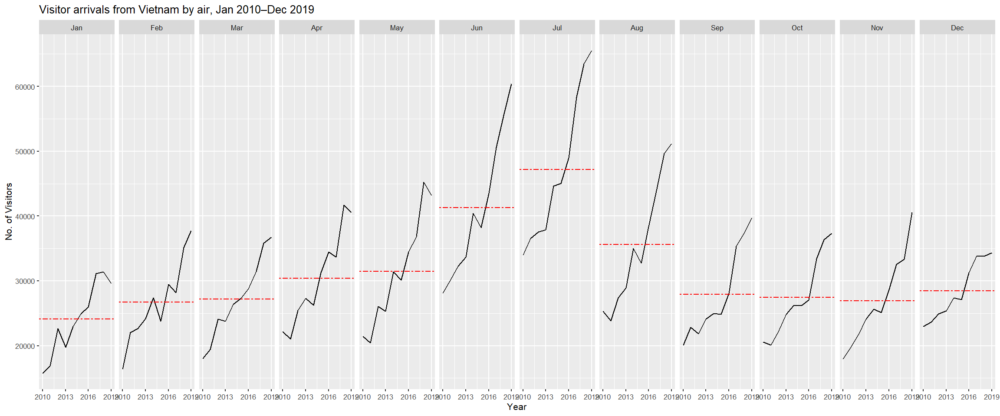
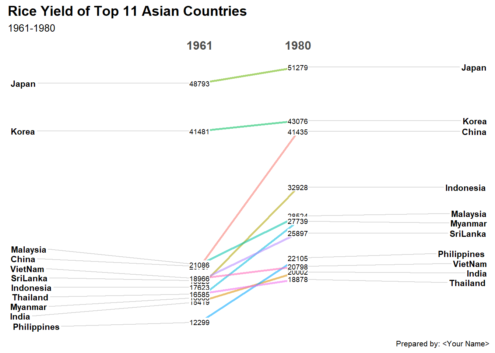
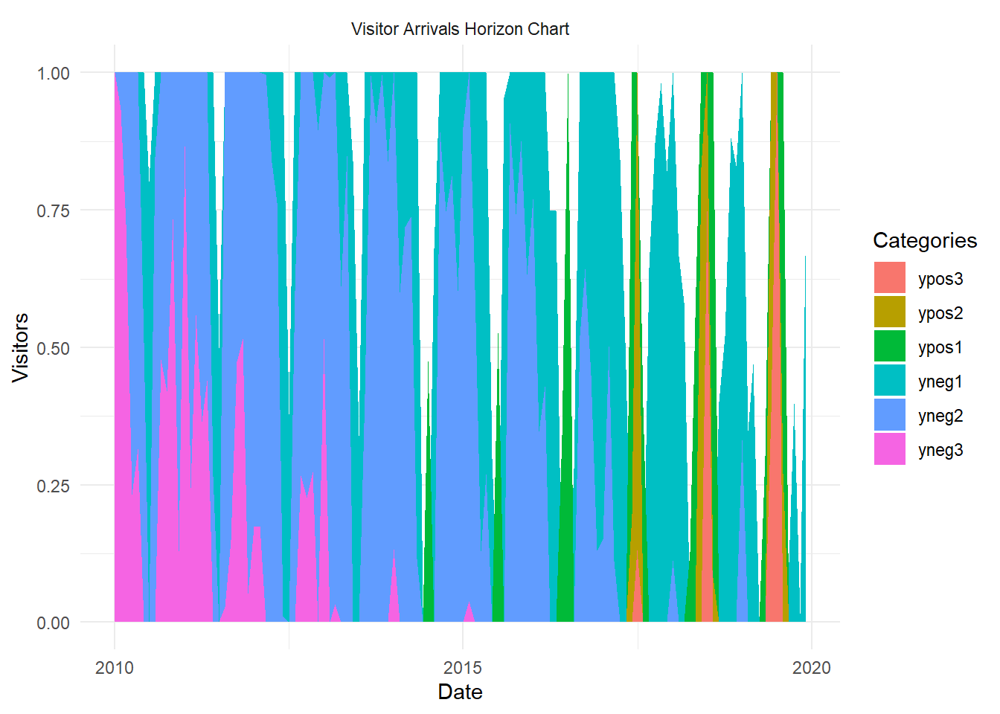

pacman::p_load(scales, viridis, lubridate, ggthemes,
gridExtra, readxl, knitr, data.table,
CGPfunctions, ggHoriPlot, tidyverse, plotly)Hands-on Exercise 7: Visualising and Analysing Time-Oriented Data
1. Getting Started
Install and load the necessary packages:
2. Plotting a Calendar Heatmap
A calendar heatmap can provide a quick visual cue of how data points (e.g., attacks, sales, events) distribute across days and hours of the week.
2.1 The Data
We will use a CSV file (eventlog.csv) containing time-series data of cyber attacks by country.
2.2 Import and Examine the Data
attacks <- read_csv("data/eventlog.csv")
# Quick peek at the data
kable(head(attacks))| timestamp | source_country | tz |
|---|---|---|
| 2015-03-12 15:59:16 | CN | Asia/Shanghai |
| 2015-03-12 16:00:48 | FR | Europe/Paris |
| 2015-03-12 16:02:26 | CN | Asia/Shanghai |
| 2015-03-12 16:02:38 | US | America/Chicago |
| 2015-03-12 16:03:22 | CN | Asia/Shanghai |
| 2015-03-12 16:03:45 | CN | Asia/Shanghai |
There are three columns, namely timestamp, source_country and tz.
timestampfield stores date-time values in POSIXct format.source_countryfield stores the source of the attack. It is in ISO 3166-1 alpha-2 country code.tzfield stores time zone of the source IP address.
2.3 Data Preparation
We want to extract weekday and hour from the timestamp.
Step 1: Write a function
make_hr_wkday <- function(ts, sc, tz) {
real_times <- ymd_hms(ts, tz = tz[1], quiet = TRUE)
dt <- data.table(
source_country = sc,
wkday = weekdays(real_times),
hour = hour(real_times)
)
return(dt)
}Step 2: Use the function and re-factor
wkday_levels <- c('Saturday','Friday','Thursday','Wednesday','Tuesday','Monday','Sunday')
attacks <- attacks %>%
group_by(tz) %>%
do(make_hr_wkday(.$timestamp, .$source_country, .$tz)) %>%
ungroup() %>%
mutate(
wkday = factor(wkday, levels = wkday_levels),
hour = factor(hour, levels = 0:23)
)
kable(head(attacks))| tz | source_country | wkday | hour |
|---|---|---|---|
| Africa/Cairo | BG | Saturday | 20 |
| Africa/Cairo | TW | Sunday | 6 |
| Africa/Cairo | TW | Sunday | 8 |
| Africa/Cairo | CN | Sunday | 11 |
| Africa/Cairo | US | Sunday | 15 |
| Africa/Cairo | CA | Monday | 11 |
2.4 Building the Calendar Heatmap
Aggregate the data and visualize:
grouped <- attacks %>%
count(wkday, hour) %>%
ungroup() %>%
na.omit()
ggplot(grouped, aes(hour, wkday, fill = n)) +
geom_tile(color = "white", size = 0.1) +
theme_tufte(base_family = "Helvetica") +
coord_equal() +
scale_fill_gradient(name = "# of attacks",
low = "sky blue", high = "dark blue") +
labs(x = NULL, y = NULL,
title = "Attacks by weekday and time of day") +
theme(
axis.ticks = element_blank(),
plot.title = element_text(hjust = 0.5),
legend.title = element_text(size = 8),
legend.text = element_text(size = 6)
)
2.5 Multiple Calendar Heatmaps (Facets)
Step 1: Find top 4 countries
attacks_by_country <- count(attacks, source_country) %>%
mutate(percent = percent(n/sum(n))) %>%
arrange(desc(n))Step 2: Extract only these top 4 countries
top4 <- attacks_by_country$source_country[1:4]
top4_attacks <- attacks %>%
filter(source_country %in% top4) %>%
count(source_country, wkday, hour) %>%
ungroup() %>%
mutate(source_country = factor(source_country, levels = top4)) %>%
na.omit()Step 3: Plot
ggplot(top4_attacks, aes(hour, wkday, fill = n)) +
geom_tile(color = "white", size = 0.1) +
theme_tufte(base_family = "Helvetica") +
coord_equal() +
scale_fill_gradient(name = "# of attacks",
low = "sky blue",
high = "dark blue") +
facet_wrap(~source_country, ncol = 2) +
labs(
x = NULL,
y = NULL,
title = "Attacks on top 4 countries by weekday and time of day"
) +
theme(
axis.ticks = element_blank(),
axis.text.x = element_text(size = 7),
plot.title = element_text(hjust = 0.5),
legend.title = element_text(size = 8),
legend.text = element_text(size = 6)
)
3. Plotting a Cycle Plot
A cycle plot highlights intra-year (or intra-cycle) patterns and helps compare across years (cycles).
3.1 Data Import
air <- read_excel("data/arrivals_by_air.xlsx")3.2 Derive Month and Year
air$month <- factor(month(air$`Month-Year`),
levels = 1:12,
labels = month.abb,
ordered = TRUE)
air$year <- year(ymd(air$`Month-Year`))3.3 Extract Target Country
Vietnam <- air %>%
select(Vietnam, month, year) %>%
filter(year >= 2010)3.4 Compute Averages
hline.data <- Vietnam %>%
group_by(month) %>%
summarise(avgvalue = mean(Vietnam))3.5 Plot the Cycle Plot
ggplot(Vietnam, aes(x = year, y = Vietnam, group = month)) +
geom_line(color = "black") +
geom_hline(
data = hline.data,
aes(yintercept = avgvalue),
linetype = 6,
colour = "red",
size = 0.5
) +
facet_wrap(~month, nrow = 1) +
scale_x_continuous(breaks = seq(2010, 2019,3)) +
labs(
x = "Year",
y = "No. of Visitors",
title = "Visitor arrivals from Vietnam by air, Jan 2010–Dec 2019"
) +
theme_gray(base_size = 8)
4. Plotting a Slopegraph
A slopegraph compares changes between two or more time points across different categories. We’ll use newggslopegraph() from CGPfunctions.
4.1 Data Import
rice <- read_csv("data/rice.csv")4.2 Plot the Slopegraph
rice %>%
mutate(Year = factor(Year)) %>%
filter(Year %in% c(1961, 1980)) %>%
newggslopegraph(
Year,
Yield,
Country,
Title = "Rice Yield of Top 11 Asian Countries",
SubTitle = "1961-1980",
)
Tip: Converting
Yearto a factor helps emphasize discrete time points.
5. More plots
5.1 Highlighting the Maximum/Minimum in a Cycle Plot
To highlight extremes in the cycle plot, we can try:
Vietnam_extremes <- Vietnam %>%
group_by(month) %>%
mutate(
max_val = max(Vietnam),
min_val = min(Vietnam)
)
ggplot(Vietnam_extremes, aes(x = year, y = Vietnam, group = month)) +
geom_line() +
geom_point(data = subset(Vietnam_extremes, Vietnam == max_val),
aes(color = "Max"), size = 2) +
geom_point(data = subset(Vietnam_extremes, Vietnam == min_val),
aes(color = "Min"), size = 2) +
facet_wrap(~ month) +
scale_color_manual(values = c("Max" = "red", "Min" = "blue")) +
labs(
title = "Visitor Arrivals - Highlighting Max and Min by Month",
color = ""
) +
theme_bw()
5.2 Adding a Trendline to the Slopegraph
While slopegraphs usually connect discrete points, we can experiment with a small data set over more than two years by adding intermediate lines:
rice %>%
filter(Year %in% c(1961,1970,1980)) %>%
mutate(Year = factor(Year)) %>%
newggslopegraph(
Year,
Yield,
Country,
Title = "Rice Yield Over Multiple Time Points",
SubTitle = "Using Slopegraph with 1961, 1970, 1980",
Caption = "Extended example"
)
5.3 Plotting a Horizon Chart
A horizon chart can compactly show how a time series changes relative to a baseline. The ggHoriPlot package can help.
Example (using the arrivals_by_air.xlsx data for Vietnam):
horizon_data <- Vietnam %>%
mutate(Date = ymd(paste(year, match(month, month.abb), "01", sep="-"))) %>%
select(Date, Visitors = Vietnam)
ggplot(horizon_data, aes(x = Date, y = Visitors)) +
geom_horizon() +
theme_minimal() +
facet_wrap(~ "Visitor Arrivals Horizon Chart", ncol = 1)
Note: Horizon charts are especially useful if you have many time series to stack vertically.
5.4 Making an Interactive Time-Series Plot
We could also convert any of these ggplot objects to an interactive plot using plotly or ggiraph:
p <- ggplot(horizon_data, aes(x = Date, y = Visitors)) +
geom_line() + theme_minimal()
ggplotly(p)6. Reference
Credits to Prof Kam.